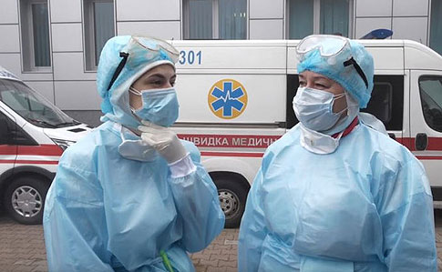
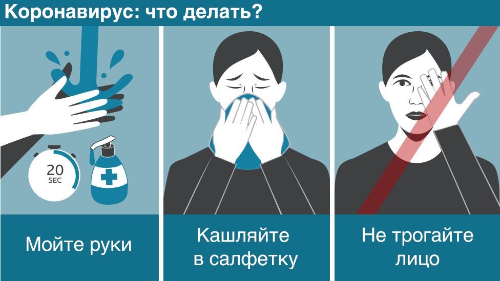

"Коронавірус атакує!"
За останню добу в Україні зафіксовано 501 новий випадок захворювання на коронавірус, 9 людей померли, водночас 60 одужали 16 квітня.
За даними ЦГЗ, станом на 9:00 17 квітня в Україні 4662 лабораторно підтверджені випадки COVID-19, з них 125 летальних, 246 пацієнтів одужали. За добу зафіксовано 501 новий випадок.
Наразі коронавірусна хвороба виявлена:
Вінницька область – 296 випадків;
Волинська область – 122 випадки;
Дніпропетровська область – 89 випадків;
Донецька область – 12 випадків;
Житомирська область – 177 випадків;
Закарпатська область – 150 випадків;
Запорізька область – 118 випадків;
Івано-Франківська область – 427 випадків;
Кіровоградська область – 218 випадків;
м. Київ – 705 випадків;
Київська область – 253 випадки;
Львівська область – 203 випадки;
Луганська область – 9 випадків;
Миколаївська область – 22 випадки;
Одеська область – 93 випадки;
Полтавська область – 41 випадок;
Рівненська область – 240 випадків;
Сумська область – 81 випадок;
Тернопільська область – 353 випадки;
Харківська область – 56 випадків;
Херсонська область – 51 випадок;
Хмельницька область – 38 випадків;
Чернівецька область – 759 випадків;
Черкаська область – 137 випадків;
Чернігівська область – 12 випадків.
Дані з тимчасово окупованих територій АР Крим, Донецької, Луганської областей та міста Севастополя відсутні.
Станом на ранок 17 квітня 2020 року до Центру громадського здоров’я надійшло 1137 повідомлень про підозру на COVID-19. Всього з початку 2020 року надійшло 15448 повідомлень про підозру на COVID-19.

17.04.2020
17.04.2020

17.04.2020
3.Вибір продуктів харчування.
Індійський дієтолог і засновник компанії Trive FNC, яка надає послуги функціонального харчування, Магда Прадан радить в період спалахів вірусів типу COVID-19 збільшити в раціоні продукти природного походження.
Джерелом вітамінів A, C, B і E, а також цинку, селену і міді, які добре захищають організм від патогенів, можуть бути фрукти і листяні овочі.
Прадан пояснює, що крім продуктів, що містять кальцій, поліпшити імунітет можуть орегано, чебрець і ехінацея. «Найкраще — збільшити в раціоні кількість органічної їжі, вирощеної на місцевих фермах без додавання хімічних добрив», — каже дієтолог.
До позитивного ефекту для роботи імунної системи також призведе скорочення споживання олій і рафінованої їжі (консерванти і будь-які оброблені/пастеризовані продукти).
Така їжа швидше приходить в непридатність і у вас можуть виникнути труднощі в її приготуванні, але зате організм людини спочатку був розрахований на вживання їжі природного походження.
Дослідження біологів з Університету Мена демонструють, що споживання фруктів і рослинних продуктів, які містять поліфеноли, дозволяють знизити запальні процеси в організмі, уникнути пошкоджень клітин токсичними формами кисню, а також запобігти імунній дисфункції.
"Рекомендації лікарів"
1.Боротьба зі стресом.
Навіть здорова людина, яка максимально відповідально стежить за своїм харчуванням, може стати жертвою нових вірусів, якщо вона щодня перевантажує свій організм стресами і надмірною роботою.Як говорить відоме прислів'я, від роботи навіть коні гинуть, а від стресів тим більше.
Враховуючи це, паніка та істерія, яка нагнітається в ЗМІ через коронавірус може бути ще небезпечнішою для людей, ніж сам вірус. Особливо це стосується найвразливішої аудиторії.
Доцент кафедри інфекційних захворювань в Університеті Джона Хопкінса Морган Катц говорить, що часті стреси однозначно можуть нашкодити імунній системі людини.
У період епідемій вірусних інфекцій (а з COVID 19 у нас, нагадаємо, ціла пандемія) Катц радить не панікувати і мінімізувати стрес.
Основні проблеми викликає кортизол — гормон, який виробляє наш організм у стресових ситуаціях і який відключає імунні клітини.
2.Здоровий сон.
Крім медитацій, які можуть допомогти вам перестати нервувати і панікувати з приводу і без нього, не забувайте надавати своєму організму достатню кількість сну.
Так само як і поживні речовини для імунної системи, сон є основним джерелом енергії для вашого організму.
Як відзначають експерти з Національної фонду сну, без достатньої кількості відпочинку організм виробляє менше цитокінів — типу білка, який забезпечує імунну відповідь під час запалень та інфекцій.
«Цитокіни виробляються і вивільняються під час сну. Хронічна втрата сну робить вакцину від грипу менш ефективною, знижуючи здатність вашого організму реагувати на віруси», — пояснюють в Sleep Foundation.
Щоб уникнути нестачу сну для імунної системи — експерти радять практикувати денний сон, два рази на день до 30 хвилин. Хоча, звичайно, багато людей навряд чи можуть дозволити собі таку розкіш.